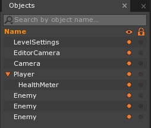

Events 4
Learning Objectives
- Learn how custom events are a powerful tool to easily implement game-wide changes whenever they are needed.
- Learn how to create a custom input manager using custom events, applying it a simple game
- Learn how to integrate and implement previously defined custom events in your own project.
| Vocabulary | |
|---|---|
| Custom Event | ZilchEvent |
| sends | String Type Identifier |
| Dependency | |
Events are the main way that objects and components talk to each other in the Zero Engine. When a component has information it needs to share, the easiest way is to package the information into an Event, and then dispatch it (i.e., send it out to other objects). Then, any objects (and the component(s) on it) that need the information can “listen” for it, accessing that information in a special response function (if this isn’t clear, don’t worry; it will all be explained in greater detail below).
In the Zero Engine, there are two main categories of events: predefined Engine events (e.g., Update events, such as LogicUpdate, and Collision events, such as CollisionStarted) that are that ready-made for you to connect to, and Custom ZilchScript Events that you define, decide when and where to send them out, choose what information is sent with them, and specify which component(s) listens for the event once it’s dispatched. This page will provide a brief recap of predefined events while focusing specifically on Custom Events (see Events for more information on predefined events).
Predefined Engine Events
There are a number of predefined events you have access to and can use in Zilch. At the bottom of this page, you can find a comprehensive list of the predefined events offered by the Zero Engine, though the ones you will probably see and use most frequently are The LogicUpdate Event, Collision Events (which comes in three variations: Started, Ended, and Persisted), and Keyboard Input Events.
Custom ZilchEvents
These are the events that you will define and dispatch yourself; that is, you will define the event in its own class as well as what occurrence causes it to be dispatched, such as: the player or enemy dying, a certain amount of points being reached, or pretty much anything else you can imagine. A helpful way to think about why you would want to use custom events in the first place is that custom events move the focus away from whatever dispatches an event (such as collision or a frame update) to the component that is responding to the dispatched event (e.g., the player’s health and its HUD element, such as a health bar, that is changed as a result of the collision). There are many benefits to this approach, including:
- One event dispatch on an object can cause many behaviors to occur.
- i.e., PlayersDamagedEvent is dispatched on the player object
- The player’s hp lowers in the Health component attached to the player
- The object representing the player’s health in the HUD scales to reflect the player’s new health
- The AnimationController changes the player sprite to the DamagedAnimation
- i.e., PlayersDamagedEvent is dispatched on the player object
- Multiple components on different objects can all respond to the same event dispatch.
- This is another way of saying the first bullet point; that is, you can have as many components listening and responding to a single event as you want.
When to Use Custom Events
Keep in mind that the user will only want to use custom events when there is more than one component “listening” for the event. The user will get the most use out of custom events when the events that are created are things that affect multiple objects in your game. Using a custom event when only one object is listening adds an unnecessary layer of abstraction, whereas a simple, direct function call to enact the desired behavior change is much simpler.
Using Custom Events in a Game
Just so it’s crystal clear what custom events do, let’s look at a brief analogy. Imagine a game set in a world just like ours, but where vampires and ghosts happen to exist alongside humans. In this scenario, the custom event we want to define would be dispatched with the rising of the sun in the morning. In this world we’re imagining, the appearance of the sun causes specific behaviors in some of the objects; for others, however it means nothing at all. For the humans, the sun rising means it’s time to wake up; for the vampires, it can mean instant death if they happen to be outside; for the ghosts, it means they are banished back to the grave; for rocks, however, it means nothing at all. Humans, vampires, and ghosts all have an interest in when the sun rises and will respond to it in different ways. Rocks couldn’t care less.
This scenario could translate into a game as follows:
- When the sun rises, a custom event is “sent out” to the entire game space.
- One must then decide what objects should be “listening” for this event. In our example, these objects would include all humans, vampires, and ghosts. We don’t even have to think about the rocks anymore.
- The “listening” objects respond to the event in different ways, requiring you to define how each object responds when they “hear” the event. These responses are written in behavior-changing functions in the components attached to the “listening” objects (humans, vampires, ghosts) that are called as a result of the component “hearing” the event.
- Here’s the entire sequence: Sun Rises –> Custom Event dispatched to Space –> Components on humans, ghosts, and vampires hear the event has happened –> Components on humans, ghosts, and vampires call their respective response functions.
- All the other objects that are not affected by the event (rocks, buildings, grass, etc...) have no need to listen to the event.
Now that we have a theoretical understanding of Custom Events and how they can be used, let’s make a simple game that uses custom events in different ways to accomplish a number of common and useful functions that you might find applicable in your own projects. We’ll be looking at events that control player input, change player health upon collision, and cause certain actions upon player death.
Setting Up the Level
Before we get started with adding any sprites, we’re going to need to grab a few ZilchScript components from The Void.
- Go to the Void and, from the
BasicGamePlaypackage, grab the componentsDamageOnCollide,Health, andAreaMeter.
One more thing we’ll want to do before anything is else is to turn off the GravityEffect on our level since our game has no need for gravity.
- In the Objects Window
- Select the
LevelSettingsobject
- Select the
- In the Properties Window
- Under GravityEffect
- Set
Activeto:false
- Set
- Under GravityEffect
Now that we have these three components imported and we’ve turned off gravity we can start adding our sprite objects to the level. First, we’re going to create a simple player sprite and change the values of some of its properties.
Player
- Command :
Create Spriteor - In the Properties Window
- Change Name to:
Player - Add an Area component
- Add a RigidBody component
- Add a BoxCollider component
- Add a Health component
- Add a DamageOnCollide component
- Under Transform
- Change Translation to:
[-3, 0, 0]
- Change Translation to:
- Under Sprite
- Change Color Property to:
[R: 0, G: 0, B: 255, A: 1.0]
- Change Color Property to:
- Under RigidBody
- Set Rotation Blocked to:
true
- Set Rotation Blocked to:
- Under Health
- Change MaxHealth to:
100 - Set DestroyAtZeroHealth to:
false
- Change MaxHealth to:
- Under DamageOnCollide
- Set Damage to:
50 - Set SendsDeathEvent to:
false - Set DieOnCollide to:
false
- Set Damage to:
- Change Name to:
With all of this done, the Property Window and your Player should look like this:
{kind=link}
Now we’re going to create three enemy objects and set the values of some of their properties.
Enemies
- Command:
CreateSpriteor - In the Properties Window
- Set Name to:
Enemy - Add an Area component
- Add a RigidBody component
- Add a SphereCollider component
- Add a DamageOnCollide component
- Add a Health component
- Under Transform
- Set Translation to
[3, 0, 0]
- Set Translation to
- Under Sprite
- Set Color to:
[R: 255, G: 0, B: 0, A: 1.00] - Set SpriteSource to:
Circle
- Set Color to:
- Under Area
- Change Size to:
[1.5, 1.5]
- Change Size to:
- Under SphereCollider
- Change Radius to:
0.75
- Change Radius to:
- Under DamageOnCollide
- Set Damage to:
35 - Set SendsDeathEvent to:
false - Set DieOnCollide to:
true
- Set Damage to:
- Set Name to:
- Under Health
- Set MaxHealth to:
50- Set DestroyAtZeroHealth to:
true
With all of this done, the Property Window and your Enemy should look like this:
{kind=link}
Now we need to make two more copies of this Enemy.
- In the Level window
- Select the
Enemyobject Ctrl+Dto Duplicate the object
- Select the
- In the Objects window
- Select the new copy of the object
- In the Properties window
- Under Transform
- Set Translation to:
[3, 3, 0]
- Set Translation to:
- Under Transform
Repeat the previous steps to make a third enemy, but this time set Translation to: [3, -3, 0]
Finally, lets make a small health bar for the player and parent it to the Player object
- Command:
CreateSpriteor - In the Properties Window
- Set Name to:
HealthMeter - Add an Area component
- Add an AreaMeter component
- Under Transform
- Set Translation to:
[-3, 1, 0]
- Set Translation to:
- Under Sprite
- Set Color to:
[R: 0, G: 255, B: 255, A: 1.0]
- Set Color to:
- Under Area
- Change Size to:
[4, 0.25]
- Change Size to:
- Under AreaMeter
- Set InitMaxVal to:
100 - Set InitStartVal to:
100
- Set InitMaxVal to:
- Set Name to:
With all this done, your Property Window and HealthMeter object should look like this:
{kind=link}
- In the Objects Window
Left Click,HoldandDragHealthMeteron top ofPlayer- Release
Left Mouse Button
- Save the project
After parenting the health meter object to the player object, your object window should look like this:

Now that we have all of our level objects placed, your level editor window should look like this:
{kind=link}
At this point we need to start making some components to add basic functionality. The first two things we’ll add is an event-based input manager and a basic player controller.
Creating the InputEvents Component
If you remember back from our first Events lesson, we finished up by making a player controller that used Keyboard events. In order to be consistent and to keep everything as efficient as possible, we’re going to be doing the same thing here, only now we will add changes that will ultimately give our player controller much more flexibility. As before, let’s start small by just getting our player to move up.
- Add a new ZilchScript resource named:
InputEvents - Update the new script to look like this:
class InputEvents : ZilchComponent
{
//Registering the string identifier "MoveRight" to the events Namespace
//MoveRight is now an event of type ZilchEvent
sends MoveRight : ZilchEvent;
//The keyboard key that will be used to move the player right
[Property]
var MoveRight : Keys = Keys.D;
function Initialize(init : CogInitializer)
{
Zero.Connect(Zero.Keyboard, Events.KeyDown, this.OnKeyDown);
}
//Response function for the KeyDown keyboard event
//Called whenever a key is pressed
function OnKeyDown(event : KeyboardEvent)
{
//If the key assigned to this.MoveRight is pressed
if(event.Key == this.MoveRight)
{
//Dispatch the the MoveRight event on to this.Owner
this.Owner.DispatchEvent(Events.MoveRight, ZilchEvent());
}
}
}
- Select the Player object
- In the Properties Window
- Save the project
Let’s review the code above by looking at the MoveRight variable (lines 8 - 9) that holds the individual key we wish to use for moving around. Since MoveRight has the Property attribute, we can change it to whatever key we like through the Property window. Now look at the OnKeyDown function. You’ll see that we’re checking to see if the key we’ve assigned to our MoveRight variable is being pressed; if it is, we create a ZilchEvent and dispatch it onto this.Owner (the Player object that has this component on it) using a string type identifier. The string type identifier we are using (named “MoveRight” as well) is setup at the very beginning of the script where we use the sends keyword. Before moving on, let’s take a quick look at exactly what the sends keyword is doing for us.
The Sends Keyword
The sends keyword may seem a bit confusing at first, but will help you in a couple of ways after it becomes clear. The sends keyword registers the string type identifier (that’s a fancy way of saying “the name that identifies the event”; in our script, the identifier is MoveRight) so that it’s associated with the event type itself. This allows us to send and connect to the event using the Events.MyCustomEvent syntax (or in our case Events.MoveRight), keeping us from making annoying typo errors. It also keeps the event type safe; that is, an error will be thrown if you try to connect to a different event that doesn’t exist or hasn’t been dispatched.
Another thing to keep in mind is that you can only use the sends keyword within the outermost class-scope (of either the class defining the custom event, which we will get to a bit later, or the class in which it is dispatched) outside of any function within that class. In other words, it must be used outside of Initialize, OnLogicUpdate, or any other function. If you look at the code-block above, you will see that it is the very first line inside the InputEvents class. As a general rule, placing the sends keyword within the class that defines the event itself is a good way to keep track of what you are registering it as. Ultimately it is up to you where you wish to put it so long as it not used inside any function.
With that said, we can continue on and fill out our InputEvents script with the rest of the Move events we need.
Finishing the InputEvents Component
- Update the
InputEventsZilchScript as follows:
class InputEvents : ZilchComponent
{
//Registering the string type identifiers for the Move events
sends MoveRight : ZilchEvent;
sends MoveLeft : ZilchEvent;
sends MoveDown : ZilchEvent;
sends MoveUp : ZilchEvent;
//The keyboard keys that will be used to move the player
[Property]
var MoveRight : Keys = Keys.D;
[Property]
var MoveLeft : Keys = Keys.A;
[Property]
var MoveUp : Keys = Keys.W;
[Property]
var MoveDown : Keys = Keys.S;
function Initialize(init : CogInitializer)
{
Zero.Connect(Zero.Keyboard, Events.KeyDown, this.OnKeyDown);
}
//Response function for the KeyDown keyboard event
//Called whenever a key is pressed
function OnKeyDown(event : KeyboardEvent)
{
//If the key assigned to this.MoveRight is pressed
if(event.Key == this.MoveRight)
{
//Dispatch the MoveRight event onto this.Owner
this.Owner.DispatchEvent(Events.MoveRight, ZilchEvent());
}
//If the key assigned to this.MoveLeft is pressed
if(event.Key == this.MoveLeft)
{
//Dispatch the MoveLeft event onto this.Owner
this.Owner.DispatchEvent(Events.MoveLeft, ZilchEvent());
}
//If the key assigned to this.MoveUp is pressed
if(event.Key == this.MoveUp)
{
//Dispatch the MoveUp event onto this.Owner
this.Owner.DispatchEvent(Events.MoveUp, ZilchEvent());
}
//If the key assigned to this.MoveDown is pressed
if(event.Key == this.MoveDown)
{
//Dispatch the MoveDown event onto this.Owner
this.Owner.DispatchEvent(Events.MoveDown, ZilchEvent());
}
}
}
Now that we all movement directions accounted for, we can move on to our PlayerController component where we’ll be listening for all these events that are being dispatched and moving our player accordingly.
Creating the PlayerController Component
Again looking back to the first Events lesson, you’ll find that the logic in this next code-block below is very similar to logic we used before with the exception that we’re now moving using the physics engine via the RigidBody component. The other changes we’ll be making allow this component to interact with the InputEvents component via custom events.
- Add a new ZilchScript resource named:
PlayerController - Update the new script to look like this:
class PlayerController : ZilchComponent
{
//We need the RigidBody component on the object for this component to work
[Dependency]
var RigidBody : RigidBody = null;
//The speed at which we want to accelerate
[Property]
var Speed : Real = 0.0;
//Variable to store our current movement direction that is changed by the
//custom Move event response functions
var Movement : Real3 = Real3();
function Initialize(init : CogInitializer)
{
//Connect to all the custom Move events we dispatched in the InputEvents component
Zero.Connect(this.Owner, Events.MoveRight, this.OnMoveRight);
Zero.Connect(this.Owner, Events.MoveLeft, this.OnMoveLeft);
Zero.Connect(this.Owner, Events.MoveUp, this.OnMoveUp);
Zero.Connect(this.Owner, Events.MoveDown, this.OnMoveDown);
//Connect to the LogicUpdate event
Zero.Connect(this.Space, Events.LogicUpdate, this.OnLogicUpdate);
}
//Response function for the MoveRight event
function OnMoveRight(event : Event)
{
//Set Movement to 1.0 on the x-axis (i.e., right direction)
this.Movement += Real3(1.0, 0.0, 0.0);
}
//Response function for the MoveLeft event
function OnMoveLeft(event : Event)
{
//Set Movement to -1.0 on the x-axis (i.e., left direction)
this.Movement += Real3(-1.0, 0.0, 0.0);
}
//Response function for the MoveUp event
function OnMoveUp(event : Event)
{
//Set Movement to 1.0 on the y-axis (i.e., up direction)
this.Movement += Real3(0.0, 1.0, 0.0);
}
//Response function for the MoveDown event
function OnMoveDown(event : Event)
{
//Set Movement to -1.0 on the y-axis (i.e., down direction)
this.Movement += Real3(0.0, -1.0, 0.0);
}
function OnLogicUpdate(event : UpdateEvent)
{
//Increment the velocity by the current Movement value multiplied by Speed
this.RigidBody.Velocity = (this.Movement * this.Speed);
//Resets Movement to (0,0,0) so we don't keep applying movement after releasing key input
this.Movement = Real3();
}
}
- Select the Player object
- In the Properties Window
- Add a PlayerController component
- Under PlayerController
- Set Speed to:
0.25
- Set Speed to:
- Save the project
If you look in the Initialize function above you’ll notice that we’re connecting to (or “listening for”) the events we dispatched in our InputEvents component. These events are dispatched according to the keyboard input from the person playing the game.
You should now be able to move the Player object around the level using the WASD keys. Just to test it out, try changing the values of MoveRight, MoveLeft, MoveUp, and MoveDown under the InputEvents component in the Property window to the arrow keys instead of WASD. Once you’ve successfully done that, you’ll know everything is working as intended, and can change them back to their original, WASD values.
One issue we have, however, is that even though you might be holding down a direction key, the player is only moving a short distance. The reason is because we’re using acceleration to move to player (i.e, we’re incrementing the player’s velocity instead of setting it directly). In its current state, if we set the velocity directly, the player would only move one unit in whichever direction that corresponds to the key pressed, as we are immediately setting this.Movement back to Real3(0,0,0). In order to have our player move at a constant speed while keys are still pressed down, we’ll need to make a significant change: we’ll be defining and implementing our own custom event.
Defining Our Own Custom Event
So far we’ve created four different ZilchEvents, but we’ve yet to define our own custom event in its own class. To finish up this player controller, let’s create a Move custom event that will handle all movement.
The first script we’ll need to change is InputEvents where we’ll define and dispatch the new Move event.
- Update
InputEventsto look like this:
//Class defining our custom Move event
class MoveEvent : ZilchEvent
{
//sending Move as the string type identifier
sends Move : MoveEvent;
//Booleans to keep track of whether our direction-assigning
//buttons are still pressed down
var IsRightDown : Boolean = false;
var IsLeftDown : Boolean = false;
var IsUpDown : Boolean = false;
var IsDownDown : Boolean = false;
}
class InputEvents : ZilchComponent
{
//The keyboard keys that will be used to move the player
[Property]
var MoveRight : Keys = Keys.D;
[Property]
var MoveLeft : Keys = Keys.A;
[Property]
var MoveUp : Keys = Keys.W;
[Property]
var MoveDown : Keys = Keys.S;
//Booleans to check if a key is being pressed
var RightIsDown : Boolean = false;
var LeftIsDown : Boolean = false;
var UpIsDown : Boolean = false;
var DownIsDown : Boolean = false;
function Initialize(init : CogInitializer)
{
//Connect, or "listen", to the KeyDown, KeyUp, and LogicUpdate events
Zero.Connect(Zero.Keyboard, Events.KeyDown, this.OnKeyDown);
Zero.Connect(Zero.Keyboard, Events.KeyUp, this.OnKeyUp);
Zero.Connect(this.Space, Events.LogicUpdate, this.OnLogicUpdate);
}
//Response function for whenever a key is pressed
function OnKeyDown(event : KeyboardEvent)
{
//If the key assigned to this.MoveRight is pressed
if(event.Key == this.MoveRight)
{
//Set RightIsDown to true, as it is being pressed
this.RightIsDown = true;
}
//If the key assigned to this.MoveLeft is pressed
if(event.Key == this.MoveLeft)
{
//Set RightIsDown to true, as it is being pressed
this.LeftIsDown = true;
}
//If the key assigned to this.MoveUp is pressed
if(event.Key == this.MoveUp)
{
//Set RightIsDown to true, as it is being pressed
this.UpIsDown = true;
}
//If the key assigned to this.MoveDown is pressed
if(event.Key == this.MoveDown)
{
//Set RightIsDown to true, as it is being pressed
this.DownIsDown = true;
}
}
//Response function called when a key being pressed is released
function OnKeyUp(event : KeyboardEvent)
{
//If MoveRight key has been released...
if(event.Key == this.MoveRight)
{
//Set RightIsDown to false
this.RightIsDown = false;
}
//If MoveLeft key has been released...
if(event.Key == this.MoveLeft)
{
//Set LeftIsDown to false
this.LeftIsDown = false;
}
//If MoveUp key has been released...
if(event.Key == this.MoveUp)
{
//Set UpIsDown to false
this.UpIsDown = false;
}
//If MoveDown key has been released...
if(event.Key == this.MoveDown)
{
//Set DownIsDown to false
this.DownIsDown = false;
}
}
function OnLogicUpdate(event : UpdateEvent)
{
//Create new instance of MoveEvent
var moveEvent = MoveEvent();
//Set event booleans to the component booleans, which check if keys are pressed
moveEvent.IsRightDown = this.RightIsDown;
moveEvent.IsLeftDown = this.LeftIsDown;
moveEvent.IsUpDown = this.UpIsDown;
moveEvent.IsDownDown = this.DownIsDown;
//Dispatch event onto the player (i.e., this.Owner since the Player
//owns this component)
this.Owner.DispatchEvent(Events.Move, moveEvent);
}
}
At the top of the script, we’re adding an entirely new class. When you need your custom events to send information, you must create a new class for that event (as opposed to the previous MoveRight, MoveLeft, etc... events we used in the previous version of the script). This doesn’t mean you have to send information in a custom event defined in a new class. As mentioned before, placing the sends keyword for the event in the class that defines it is good practice and can be the only thing you need to place inside the class.
Note
On Instantiating a Custom Event
It might not make sense at first why we’re creating a new instance of MoveEvent (moveEvent is what we’re calling the new instance in the above code-block) when we need to dispatch it. The first reason is that, as MoveEvent is defined within its own class, it only exists as an event type until we actually instantiate it as a variable.
Consider when you create a new Integer variable. You’re actually creating a variable of the type Integer that contains all of the member properties and functions of Integer. The same applies here. MoveEvent has been defined as a new event type, thus to use the class we have to create a new instance of that event type.
The second reason is that, often times, custom events send information, requiring a new instance for each time we dispatch the event in case the information changes from the initial value set in the event class definition. In the above code-block, we’re changing the value of four Boolean variables every time a key is pressed down or released. We create a new instance of the MoveEvent event type event frame so that the PlayerController changes the Movement variable to the direction we wish to move. Since all the events are being dispatched within the scope of OnLogicUpdate, however, we only need to create one instance of MoveEvent (as every time a key is pressed, and OnKeyDown is called, a new instance of MoveEvent will be created and used for the event dispatch for that specific, singular key press).
The information we’re sending are four Boolean variables that flag whether or not the keys assigned to the movement directions are being pressed or not. In the PlayerController script, these Booleans are responsible for changing the Movement Real3 variable, either incrementing by the direction or resetting it to zero if no keys are down. If you look through the OnMove function, you’ll see that the booleans that were sent are accessed through the custom event’s instance name (e.g., moveEvent.IsRightDown accesses the value of this.RightIsDown in the InputEvents script within the OnLogicUpdate function).
Our final step is to update the PlayerController script to listen for this new event and respond appropriately.
- In
PlayerController, replace:
//Connect to all the custom Move events we dispatched in the InputEvents component
Zero.Connect(this.Owner, Events.MoveRight, this.OnMoveRight);
Zero.Connect(this.Owner, Events.MoveLeft, this.OnMoveLeft);
Zero.Connect(this.Owner, Events.MoveUp, this.OnMoveUp);
Zero.Connect(this.Owner, Events.MoveDown, this.OnMoveDown);
with
//Connect to the custom Move event we dispatched in the InputEvents component
Zero.Connect(this.Owner, Events.Move, this.OnMove);
And replace:
//Response function for the MoveRight event
function OnMoveRight(event : Event)
{
//Set Movement to 1.0 on the x-axis (i.e., right direction)
this.Movement += Real3(1.0, 0.0, 0.0);
}
//Response function for the MoveLeftevent
function OnMoveLeft(event : Event)
{
//Set Movement to -1.0 on the x-axis (i.e., left direction)
this.Movement += Real3(-1.0, 0.0, 0.0);
}
//Response function for the MoveUp event
function OnMoveUp(event : Event)
{
//Set Movement to 1.0 on the y-axis (i.e., up direction)
this.Movement += Real3(0.0, 1.0, 0.0);
}
//Response function for the MoveDown event
function OnMoveDown(event : Event)
{
//Set Movement to -1.0 on the y-axis (i.e., down direction)
this.Movement += Real3(0.0, -1.0, 0.0);
}
with
function OnMove(moveEvent : MoveEvent)
{
if(moveEvent.IsRightDown)
{
//Increment Movement by pos-X (right)
this.Movement += Real3(1,0,0);
}
if(moveEvent.IsLeftDown)
{
//Increment Movement by neg-X (left)
this.Movement += Real3(-1,0,0);
}
if(moveEvent.IsUpDown)
{
//Increment Movement by pos-Y (up)
this.Movement += Real3(0,1,0);
}
if(moveEvent.IsDownDown)
{
//Increment Movement by pos-X (right)
this.Movement += Real3(0,-1,0);
}
}
The only thing in the above code-block we haven’t gone over is in the last few lines. There is another Boolean (this.AreKeysDown) that’s only purpose is to keep track of whether any key we’ve assigned to a movement direction is currently pressed down. We accomplish this by checking all four key-down checking Booleans that are sent with our custom event.
We now have an input-customizable player controller that takes advantage of a user-defined custom event.
Note
The Component-Based Connection
You may have realized that all of the basic functionality that we’ve written in these two components could have been accomplished in one script in about half the lines of code. This does not mean, however, that it would be the best or most efficient way. What you gain through making your player controller in two different components is a separation of logic that allows you to use either one for any number of other objects and purposes. For example, InputEvents could be used for any type of player input, not just movement. By adding the Property attribute to the movement directions keyboard keys variables, you can quickly and easily remap them to whichever keys you want. You can also add more variables with the Property attribute to account for more player input, whatever it may be.
In a similar vein, the PlayerController could be used for more than just the player. It could be used for any object that requires movement, whether it be user-controlled or not. It would require a little bit of refactoring, such as listening for whatever other custom event you create for other objects that require movement. While the primary purpose of this lesson is to teach the basics of custom events, it also serves as an example of how to create multi-use, robust components that you can keep and use in other projects, a concept which is at the heart of component-based programming.
The next part of the project will be to integrate the scripts we downloaded from The Void, working with the custom events already defined within them. Let’s take a closer look at those components: DamageOnCollide, Health, and AreaMeter.
The DamageOnCollide and Health Components
These two components work together to provide a clear and simple health and damage system. Let’s look at the Health component first.
- In the Library window
- Under ZilchScript
- Open the
HealthZilchScript
- Open the
- Under ZilchScript
As you can see at the top of the script, we are defining a custom Damage event that will be dispatched onto objects with a Health component when they collide with an object that has the DamageOnCollide component. The function called by the response function for the damage event–ApplyDamage()–calculates the player’s current health based on damage taken. It then checks to see if the object’s health has reached less than or equal to zero; if so, it sends out a death event, which we will be connecting to a bit later in the tutorial. For now, we need to add three lines of code that will make use of custom events to interact with our AreaMeter component, which will scale our health meter Sprite according to the current value of our health.
- Update the
Healthscript with the following code:
function ApplyDamage(damage : Real)
{
// Compute the total damage based upon our damage scalar.
damage = damage * this.DamageScalar;
//Decrement our health by passed-in damage
this.CurrentHealth -= damage;
// Clamp our current health (in my case I don't want to have
// to heal through negative health so I clamp to 0).
this.CurrentHealth = Math.Clamp(this.CurrentHealth, 0.0, this.MaxHealth);
//Instantiate and dispatch a MeterUpdate event carrying the
//value for our current health
var meterUpdate = MeterUpdate();
meterUpdate.Val = this.CurrentHealth;
this.Owner.DispatchDown(Events.MeterUpdate, meterUpdate);
// If we have no health.
if(this.CurrentHealth <= 0.0)
{
// Let anyone listening know we just died.
var toSend = ZilchEvent();
this.Owner.DispatchEvent(Events.Death, toSend);
// And if the property is set destroy ourself.
if(this.DestroyAtZeroHealth)
{
this.Owner.Destroy();
}
}
}
Now let’s take a look at the DamageOnCollide component. The only event it’s connecting to is the built-in CollisionStarted event. What we’re concerned with is what’s going on within the response function for this collision event. In OnCollisionStarted(), the following code-block calls the damage event we just saw in the Health component:
// If what we hit has a health component then damage it.
var health = otherObject.Health;
if(health != null)
{
var firstPoint = collisionEvent.FirstPoint;
var damageEvent = DamageEvent();
damageEvent.Normal = firstPoint.WorldNormalTowardsOther;
damageEvent.Damage = this.Damage;
damageEvent.WorldPoint = firstPoint.WorldPoint;
otherObject.DispatchEvent(Events.ApplyDamage, damageEvent);
}
We can break down what is happening here into a few steps:
- First, we have to check to make sure the object we’re colliding with has the Health component. If it does not, then we’re not going to be doing any damage to its health and there’s not much use in using this component in the first place.
- Second, we set the variables defined in the DamageEvent definition with information we’re receiving from the collision. Also, and more importantly for us in this tutorial, we are setting the amount of damage to inflict on the other object to
this.Damage, our property that we set when we first attached the DamageOnCollide component to the player and enemy objects. - Finally, we dispatch the event to the object we collided with (
otherObject).
So now that we’ve looked at how these two components work, and have made a slight addition that calls on the AreaMeter component, lets take a quick look at exactly what the AreaMeter component is doing and how it is using its own custom events.
The AreaMeter Component
In a nutshell, this script will control the size of the health meter according to values set in the properties of the component. Let’s break it down into a few steps:
- When you set
InitMaxValthat was essentially telling the component that the number 100 will be used as the highest value possible, which aligns directly with our player’s health. - The same is true for the
InitStartValproperty. We want the player to start with 100 health, so our health meter should represent a full health bar at the start. - If you look at the top of the script, you will see that the fourth and last custom event is named
MeterUpdate. This is the event that we will concern ourselves with, as we will need to update the value of the meter to match our player’s changing health. - According to the rest of script, as the value gets lower from its maximum value, the Area of the object that the component is attached to will scale smaller along the X-axis; in short, as the player is damaged, its health bar will grow smaller.
Now that we finally have everything set up in the level, all that’s left to do is: update our PlayerController script with the appropriate connections to the events we’ve already dispatched, create our player death event, and write the response functions that will run upon successful connection to our dispatched events.
Adding Event Connection to the PlayerController Component
We need to update the PlayerController script in three ways:
- Connect to the death event dispatched by the Health component
- Write our response function to the event connection
- Update the
PlayerControllerscript with the following code:
class PlayerController : ZilchComponent
{
[Dependency]
var RigidBody : RigidBody = null;
//The speed at which we want to accelerate
[Property]
var Speed : Real = 0.0;
var Movement : Real3 = Real3();
//A boolean to track whether or not the object has run out of health
var IsDead : Boolean = false;
function Initialize(init : CogInitializer)
{
//Connect to the custom Move event we dispatched in the InputEvents component
Zero.Connect(this.Owner, Events.Move, this.OnMove);
//Connect to the custom Death event dispatched from the Health component
Zero.Connect(this.Owner, Events.Death, this.OnDeath);
Zero.Connect(this.Space, Events.LogicUpdate, this.OnLogicUpdate);
}
//The response function called upon hearing the custom Move event
function OnMove(moveEvent : MoveEvent)
{
//If MoveRight key is being pressed...
if(moveEvent.IsRightDown)
{
//Increment Movement by pos-X (right)
this.Movement += Real3(1,0,0);
}
//If MoveLeft key is being pressed...
if(moveEvent.IsLeftDown)
{
//Increment Movement by neg-X (left)
this.Movement += Real3(-1,0,0);
}
//If MoveUp key is being pressed...
if(moveEvent.IsUpDown)
{
//Increment Movement by pos-Y (up)
this.Movement += Real3(0,1,0);
}
//If MoveDown key is being pressed...
if(moveEvent.IsDownDown)
{
//Increment Movement by pos-X (right)
this.Movement += Real3(0,-1,0);
}
}
function OnLogicUpdate(event : UpdateEvent)
{
//Increment the velocity by the current Movement value multiplied by Speed
this.RigidBody.Velocity = (this.Movement * this.Speed);
//Resets Movement to (0,0,0) so we don't keep applying movement after releasing key input
this.Movement = Real3();
}
//The response function called upon hearing the custom Death event
function OnDeath(event : ZilchEvent)
{
//Destroys the player object
this.Owner.Destroy();
}
}
In the Initialize function, we’re now connecting to the death event sent out from our player’s Health component. At the bottom of the script, in our response script to the player death event, all we have to do is destroy the player object by calling the Destroy() function on this.Owner (recall that this.Owner refers to the object that the component is attached to, so in this case it refers to the player object).
You should now be able to move around the level and hit the enemies, which will reduce the player’s health meter. When the player hits the last enemy, the player should die, and destroy itself
Conclusions
In this tutorial, we’ve seen many different examples of both built-in engine events and user-defined custom events. We’ve also seen numerous ways in which events are dispatched, connected to, and disconnected from. If you would like to practice creating and connecting your own custom events, here are a few ideas you can use that can be applied directly to this project, allowing you to explore different aspects of custom events so that you are completely comfortable with them when you’re ready to use them in your own games.
On Your Own
- Make a few different enemy types that each react differently to being damaged by the player (i.e. one explodes, one shrinks to nothing, and another flies off the screen), but all listen for the same damage event.
- Make a “PlayerRevive” event that reconnects all the controls, resets the player and its health meter, and brings back the enemies, essentially resetting the level without reloading the level. You could dispatch this event on a certain once the player has died.
- Add some power-ups or state-changing objects to the level that cause changes in both the player and the enemies when the player collides with them. You could change current player health, the size of the player using the Area component, spawn a shield around the player, cause the enemies to change color and start moving around, or anything else you might see yourself wanting to use in later projects.